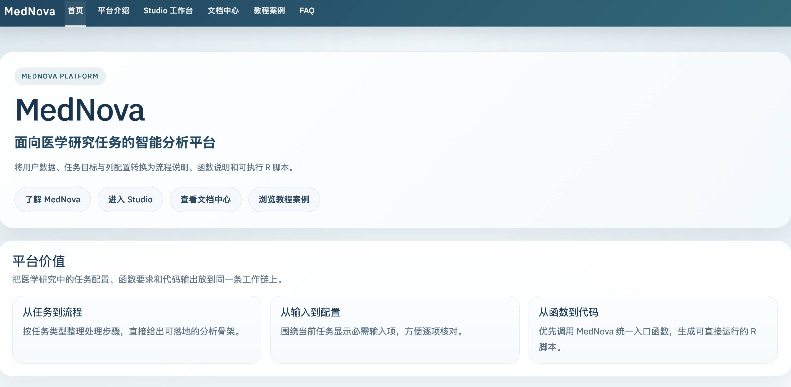
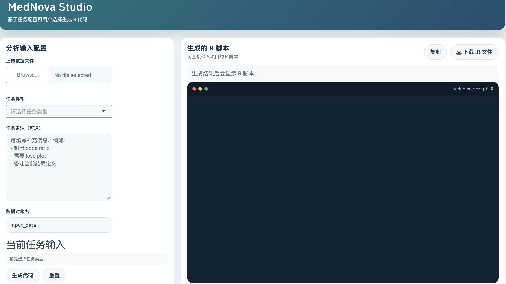

MedNova Studio
交互式工作台，集中处理数据上传、任务选择、字段配置和脚本导出。
面向医学研究任务的智能分析平台
将用户数据、任务目标与列配置转换为流程说明、函数说明与可执行 R 脚本。
交互式工作台，集中处理数据上传、任务选择、字段配置和脚本导出。
函数说明、数据要求、工作台用法和常见问题统一收录在文档中心。
按场景整理 PSM、Logistic、Cox、MR 和诊断模型的示例路径。
run_mednova_app()
信息清晰、路径统一，适合在分析开始前快速完成方案整理和脚本准备。
按任务类型整理分析步骤，先确定工作路径，再组织脚本结构。
围绕当前任务展示所需字段，减少无关输入，方便逐项核对。
将统一入口函数、输入要求和流程步骤整合成一段可直接运行的 R 脚本。
平台以常见医学研究场景为主，优先提供清晰、稳定、可复核的脚本生成能力。
组织匹配、平衡核对、baseline table 和 love plot 输出脚本。
支持二分类结局建模、OR 输出与回归流程整理。
围绕时间列、事件列与预测变量生成生存分析脚本。
组织 Bulk RNA 的分组整理、过滤、limma 分析与结果查看。
连接 exposure / outcome 处理、协调和 MR 主流程。
支持模型、性能输出与 ROC 相关结果组织。
联动生成 love plot、forest plot、ROC 与火山图等常见图形脚本。
导入 `.csv`、`.tsv`、`.xlsx` 或 `.rds` 文件。
用任务类型决定当前工作流和需要显示的输入项。
只填写当前任务真正需要的列和参数。
查看主函数、当前映射与仍缺少的关键字段。
导出完整脚本，进入项目环境继续人工复核与执行。
平台首页负责产品介绍和入口分流，Studio 负责任务配置、输入核对和代码输出。两张界面图分别展示平台门面和实际工作台，角色不会再混在一起。

docs/assets/images/platform-preview.png。
docs/assets/images/studio-preview.png。